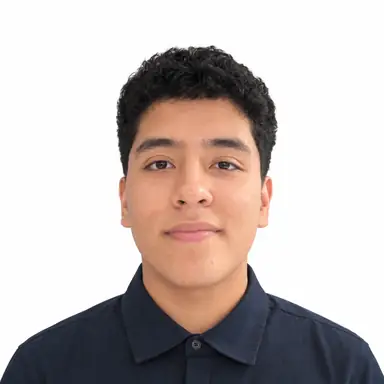

Frontend
- HTML5
- CSS3
- JavaScript
- Bootstrap
- Material Design 3

Hola, soy
Estudiante de Programación | Desarrollador de sistemas y automatizaciones
No hago solo ejercicios de clase: diseño, desarrollo y despliego sistemas completos, un punto de venta para pequeñas empresas, un asistente de voz con IA y aplicaciones web con Next.js. Uso Linux a diario.
Cuando algo no funciona, cambio de enfoque hasta que funciona.
Soy estudiante de programación en el CECyT No. 3 "Estanislao Ramírez Ruiz" del IPN, en Ecatepec, y desarrollador autodidacta. No me gusta quedarme con la teoría: construí mi propio clon self-hosted de Astra AI (tutor de estudio con IA), un generador de audiolibros con voz local, un contador de calorías que reconoce tu comida por foto, un sistema de punto de venta para pequeñas empresas (Next.js + SQLite + Electron) y un asistente de voz con IA que responde desde mi propio servidor.
Uso Linux como sistema operativo diario, configuro mis propias redes con Tailscale y automatizo lo que repito: si hago algo dos veces, busco la forma de que el sistema lo haga por mí. Mi forma de trabajar: entender el problema, elegir la herramienta correcta y, si algo falla, probar otra vez con un enfoque distinto.
Proyectos propios que construí y opero: yo elegí las tecnologías, la arquitectura y cada funcionalidad.
Los proyectos se cargan con JavaScript
2024 — actualidad
Formación técnica en programación, cursando el quinto semestre. Fuera del salón he desarrollado un sistema de punto de venta, aplicaciones de escritorio y automatizaciones que uso en mi día a día.
En curso
Un clon de Astra AI self-hosted con podcasts estilo NotebookLM, un generador de audiolibros con voz local, un contador de calorías con visión por IA, un asistente de voz y un sistema POS para practicar arquitectura, bases de datos e interfaces reales.